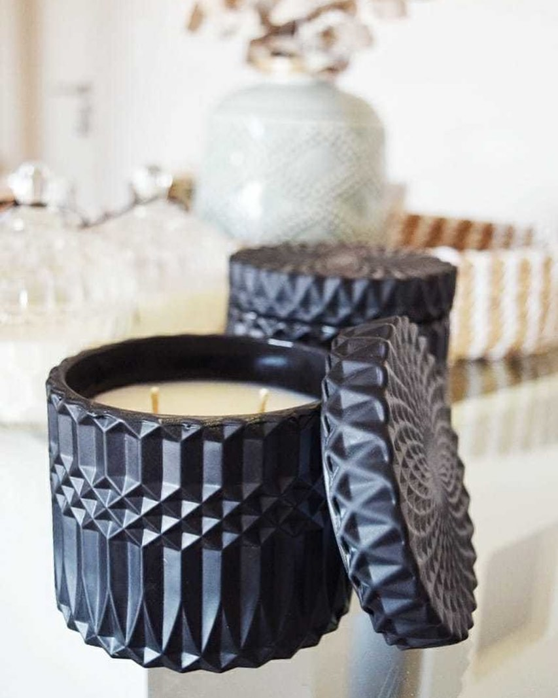
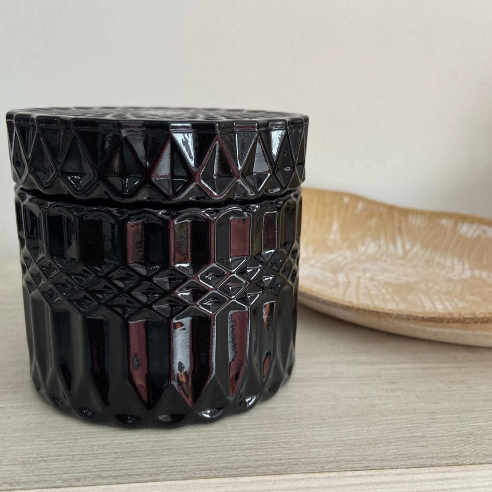

La sesión de Limpieza energética es a distancia y
tiene el fin de limpiar, cortar y liberar cualquier
energía negativa que estés cargando en tus cuerpos
mental, emocional, físico o etérico. Se realiza una
armonización y desbloqueo en los chakras y se trabaja
en el aura reparando y fortaleciendo. Al eliminar muchos
bloqueos de la persona, se suele conseguir trabajo si estaba
costando… mejorar en ámbitos familiares, de pareja, básicamente
todo lo ENERGÉTICO se libera y comienza a estar mejor.
La sesión la hago solo por la noche cuando tú estés durmiendo o estés relajado/a acostado/a. También recomiendo escuchar una
meditación guiada para poder estar más relajado/a y ayudar a
la limpieza, lo envío cuando pactamos turno. Luego al día
siguiente se envía un PDF con el informe final, explicando
cómo estabas y con herramientas para acompañar la limpieza.
Para poder seguir con la misma te pido que me envíes comprobante de pago, y nombre completo y fecha de nacimiento de la persona o las personas que van a recibir el servicio (el servicio es individual, pero puedes contratarlo para otra persona).
Tarot
Velas Aromáticas


Gracias por visitar nuestra página web.
Te invitamos a darle play para relajarte
Este video puede servirte para limpiar las malas energias del ambiente en el que estás buscando relajarte, podes utilizarlo cuando lo necesites, siempre lo vas a encontrar aquí